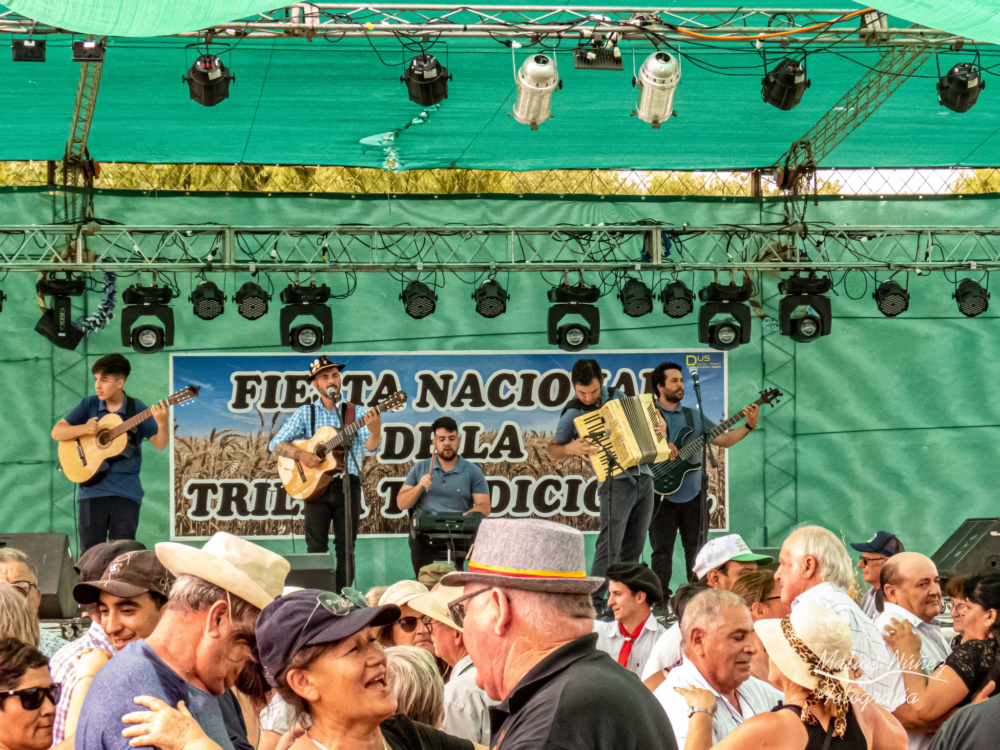
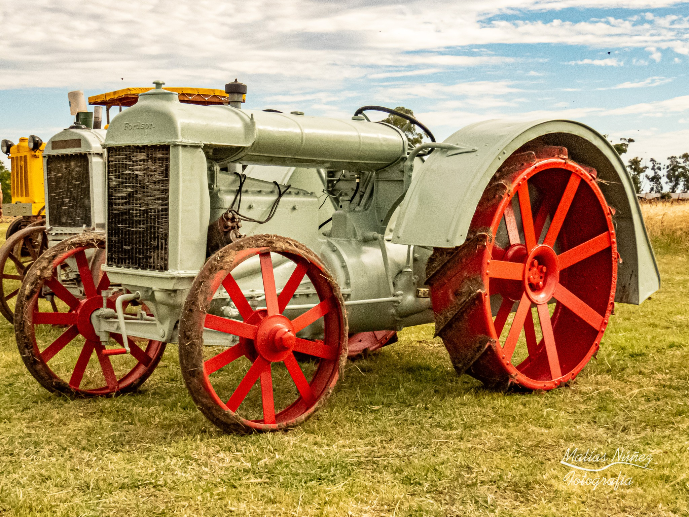
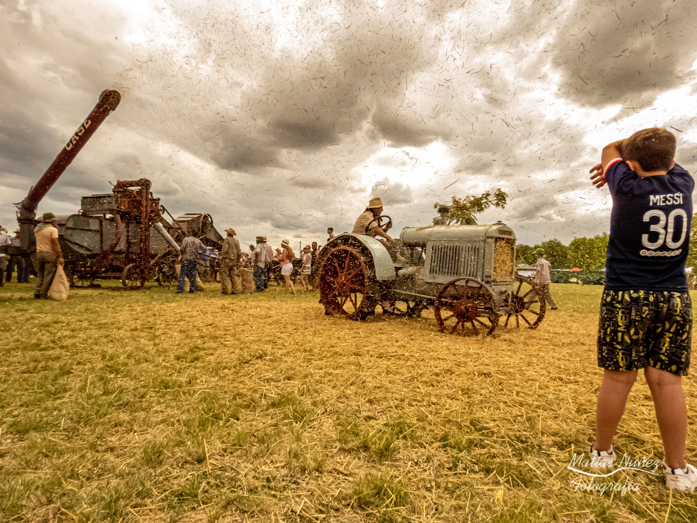
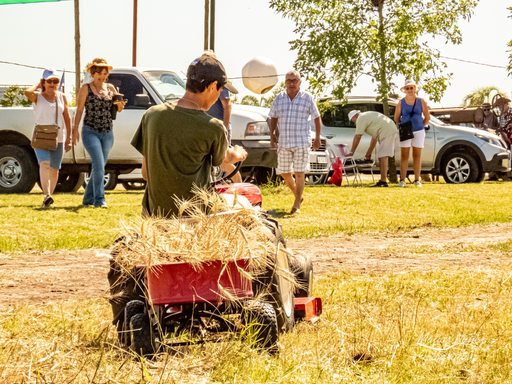

Santa Anita
Compartimos algunas imágenes de la Fiesta Nacional de la Trilla Tradicional 2021 en la localidad de Santa Anita.
Durante tres días se vivió a pleno la música, la tradición, los colores y mucha diversión junto a reconocidos conjuntos musicales y ballets.
Especial agradecimiento a los organizadores, locutores, músicos, bailarines y público en general por haber hecho esto posible, y que se pueda seguir rememorando esta forma de cosecha que nos ha atravesado durante tantos años y que aún sigue vigente.
poco de lo que fue la Fiesta de la Trilla en Santa Anita la semana pasada, con los amigos de Brisas Inmigrantes. ¡A puro baile!  